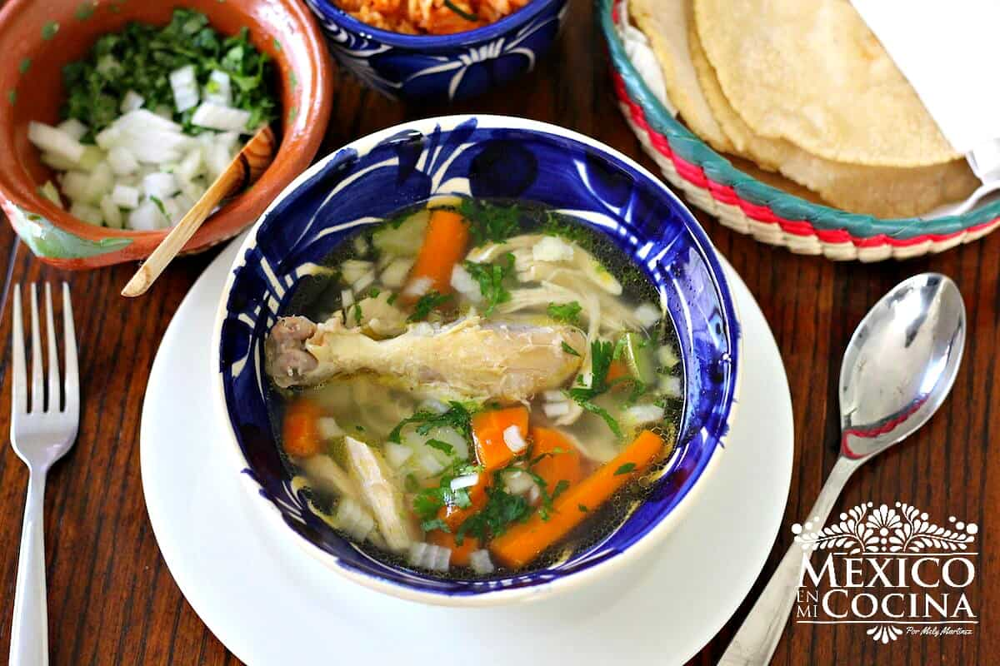

Caldo de Pollo

Description
Caldo de pollo is a type of Mexican chicken soup.
Unlike other Latin American chicken soups, it uses whole chicken pieces instead of shredded or chopped meat.
It also calls for hearty vegetables like potatoes and carrots, cut into large chunks.
Ingredients
- Chicken: Start with five pounds of chicken leg quarters.
- Water: The broth starts with two gallons of water.
- Seasonings: Season the caldo de pollo with minced garlic, salt, garlic powder, and chicken bouillon.
- Vegetables: You’ll need carrots, potatoes, zucchini, a chayote, and an onion.
- Cilantro: Stir fresh cilantro into each bowl before serving.
Steps
- Boil the water, chicken, and seasonings (besides the chicken bouillon) together.
- Reduce to a simmer and cook until the meat falls off the bone.
- Stir in the bouillon and vegetables, then simmer until the veggies are tender.
- Stir in the cilantro.
Back to Homepage